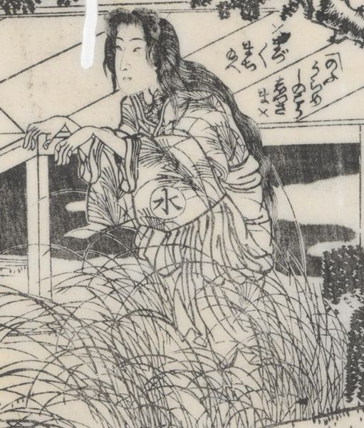

← 图鉴索引

水鶏の霊。薄模様の小袖。両手を前に出し垂らしている。草原から現れている。
著作者：一陽齋豊國ほか／出典：親書誌：U426_nichibunken_0444：庭訓武藏鐙／日付：2017／資源識別子：U426_nichibunken_0444_0022_0000
Copyright (c)2010- International Research Center for Japanese Studies, Kyoto, Japan. All rights reserved.